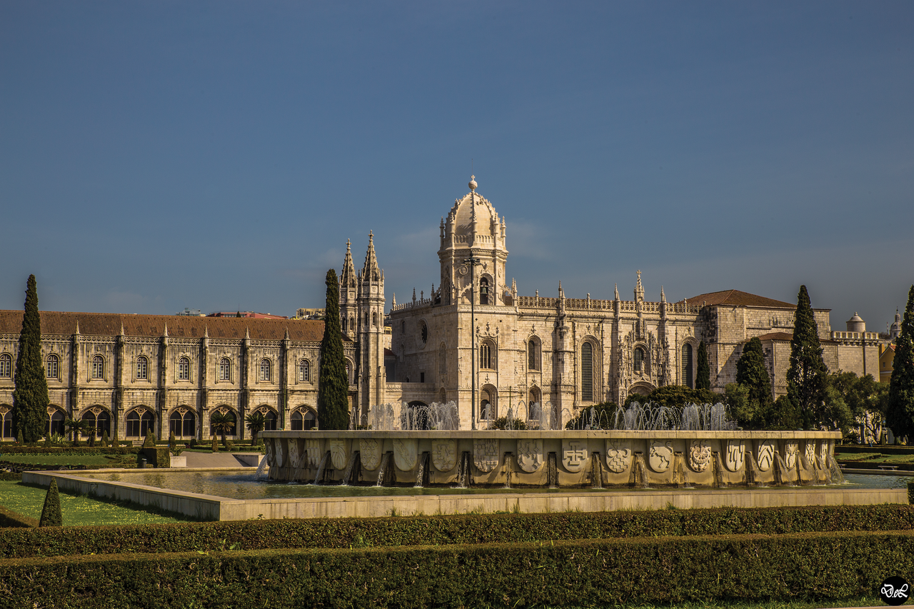

Zabytki Lizbony
Najciekawsze miejsca w Lizbonie
- Klasztor Hieronimtów
- Wieża Belem
- Katedra Se
- Narodowe Muzeum Azulejos
- Kościół św. Rocha
- Lizbońskie oceanarium
- Punk widokowy Portas do Sol
- Winda Santa Justa
Klasztor Hieronimtów w Lizbonie
Wielki kompleks klasztorny w Portugalii, w lizbońskiej dzielnicy Belém. Zbudowany w I połowie XVI w., uważany jest za perłę i kwintesencję stylu manuelińskiego, będącego specyficznym dla Portugalii połączeniem gotyku i renesansu. W roku 1983 budowla została wpisana na Listę światowego dziedzictwa UNESCO, zaś 7 lipca 2007 r. została ogłoszona jednym z Siedmiu Cudów Portugalii.
